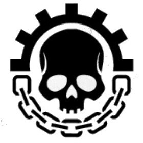

Legio Cybernetica
| Legio Cybernetica | |
|---|---|
| Legion of battle-automata of the Adeptus Mechanicus | |
 The skull, cog and chain of the Legio Cybernetica: the machine bound to obedience | |
| Founded | Age of Strife, on Mars (date unrecorded; estimated M25–M29)[a] |
| Type | Legiones Militant of the Mechanicum |
| Allegiance | The Fabricator-General and the Machine God; divided in the Schism of Mars (005–006.M31) |
| Units | Cohorts of 30 to 100 maniples; each maniple of one to five automata |
| Command | An archmagos per cohort; Magi Dominus in the field |
| Patterns | Castellan, Vorax, Thanatar, Castellax, Domitar, Kastelan, Conqueror |
| Size | Several thousand cohorts in 005.M31; far fewer since |
| Notable battles | Schism of Mars; Burning of Prospero; Siege of Terra |
The Legio Cybernetica is the order of the Adeptus Mechanicus that builds, keeps and commands battle-automata, robots made for war. It is one of the oldest orders of the Martian priesthood. Its machines are not thinking minds, which the Mechanicus has forbidden since the Age of Strife, but are governed by the doctrina-wafers and commands of the tech-priests who lead them.[1]
In the Great Crusade (c. 798.M30 – 005.M31) the Legio sent thousands of cohorts to fight beside the Space Marine Legions and the Imperial Army. In the Horus Heresy it split as the rest of the Mechanicum did. Its traitor cohorts fled to the Eye of Terror in 014.M31 and serve the Dark Mechanicum still. The loyal cohorts took new oaths to the Imperium. The Legio survives into the 42nd millennium, smaller and more closely watched, and its Kastelan robots fight in the armies of forge worlds across the Imperium.[1][2]
History
[edit]The Crimson Accord
[edit]The tech-priests of the Age of Strife inherited a terrible lesson from the Dark Age of Technology: the thinking machines of that era, the Silica Animus, had turned on humanity. The first synods of Mars swore the Crimson Accord, which forbade any artificial mind on pain of death. The Accord allowed only "lesser and righteous works", machines that obey but do not think. The battle-automata were the most dangerous of these, and they were given to a single order, the Legio Cybernetica, to keep. Some tech-priests went further than the Accord allowed and bound the spirits of beasts, or of things from the Warp, into their engines. The animal-like Thanatar, Castellax and Vorax patterns descend from that age, and are now built only on the most independent forge worlds.[1]
The Great Crusade
[edit]Under the Treaty of Olympus, which joined Mars to the Imperium at the start of the Crusade, the Mechanicum owed troops to the Emperor's wars. The Legio's cohorts left their forge worlds to serve as mercenary regiments in the Expeditionary Fleets. A cohort was usually spread across a whole Legion or army, its maniples attached where they were needed. By the outbreak of the Heresy in 005.M31 several thousand cohorts were active.[1]
The Horus Heresy
[edit]When Kelbor-Hal took the side of Horus and opened the Schism of Mars in 005.M31, many of the cohorts on Mars obeyed their traitorous masters. Elsewhere the Legio split cohort by cohort, along the old loyalties of the forge worlds it served. Some cohorts held to their oaths to the Emperor. Others saw in Horus's war a chance to escape the Crimson Accord. Both sides used robots in great numbers to spare their human troops, and robot fought robot from Mars to the Siege of Terra (013–014.M31). At the Burning of Prospero in 006.M31 Castellax automata fought beside the Space Wolves against the Thousand Sons.[2]
After the Heresy the traitor cohorts fled into the Eye of Terror with the Dark Mechanicum, and their machines have since been changed by the Warp. The loyal cohorts, under Zagreus Kane, the first Fabricator-General of the new Adeptus Mechanicus from 012.M31, swore oaths that Mechanicus records describe as harsher than any sworn by the Adeptus Astartes.[1]

The later Imperium
[edit]The Legio has never recovered its Crusade strength. For most of the following ten thousand years it fought rarely, and the older patterns were forgotten. In the 41st millennium its best-known machines are the Kastelan robots, deployed in maniples under a Datasmith by the Cult Mechanicus and the forge world armies of Mars, Ryza and Stygies VIII. In the Era Indomitus the forge worlds have woken older patterns for the Indomitus Crusade (999.M41 – c. 012.M42), and Kastelan maniples serve beside Skitarii in the war fleets of Roboute Guilliman.[3][4]
Organisation
[edit]The Legio was divided from its foundation into small, separate cohorts, so that no archmagos could command enough robots to overthrow a world. A cohort held between thirty and a hundred maniples, each of one to five automata under a tech-adept, with its own Enginseers, Servitors, transports and, in some cases, starships. Cohorts were forbidden to found their own forges. They depended on the forge worlds for supply, which kept them bound to the Mechanicum's web of loyalties.[1]
Each robot is given its orders as doctrina, programs loaded before battle, and can be re-programmed in the field by its controller. A controller is also charged with destroying any automaton that malfunctions, by its own self-destruct. The cohorts belong, with the Titan Legions, the Knight houses and the Skitarii, to the military orders of the Mechanicus, and on a forge world they form part of its Taghmata.[1]

Timeline
[edit]| Date | Event |
|---|---|
| Age of Strife (estimated M25–M29) | The Crimson Accord sworn; the Legio founded on Mars |
| c. 798.M30 | Treaty of Olympus; cohorts join the Great Crusade |
| 005–006.M31 | Schism of Mars; the Legio divided |
| 006.M31 | Castellax maniples at the Burning of Prospero |
| 012.M31 | Loyal cohorts pass into the new Adeptus Mechanicus |
| 014.M31 | Traitor cohorts flee to the Eye of Terror |
| 999.M41 onward | Kastelan and older patterns serve in the Indomitus Crusade |
See also
[edit]Notes
[edit]- ^ No founding year survives. The Legio is said to be as old as the Crimson Accord, which belongs to the first Martian synods of the Age of Strife.
References
[edit]- ^ a b c d e f g Codicil of the Crimson Accord (sealed, rev. M32). Archives of the Fabricator-General, Mars.
- ^ a b Chronicles of the Heresy (sealed). Logos Historica Verita, Terra.
- ^ Cawl, Belisarius (c. 999.M41). Notes on the Ultima Founding. Mars.
- ^ Records of the Indomitus Crusade (ongoing). Office of the Lord Commander.